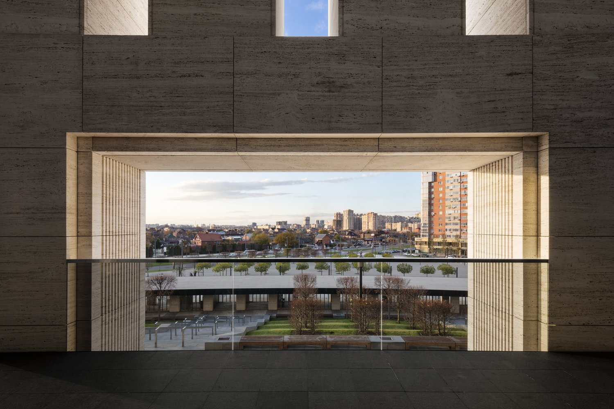

Расположенный к северо-востоку от города Краснодара на юге России, стадион, спроектированный в соответствии с рекомендациями УЕФА, возвышается на цоколе и удобно вписывается в открытый ландшафт парка. Благодаря классическому разделению возвышения на три части футбольный стадион четко отсылает к общему стилю первоначального амфитеатра древних времен, включая рифленые пилястры из яркого, почти белого римского травертина, расположенные в правильном порядке.
Напротив, крыша над трибунами была спроектирована как легкая кольцевая канатная конструкция. Его двухслойная покрывающая мембрана состоит из стекловолоконной сетки с покрытием из ПТФЭ, создавая трехмерную форму крыши, которая объединяет технические службы, такие как прожекторное освещение и обогрев зрительских трибун. Зона за верхним ярусом полностью оборудована светодиодными модулями. Этот 360-градусный экран, первый в мире, может использоваться для различных форматов медиапроекций. Его волнообразный изогнутый контур является результатом геометрии стадиона, основная овальная форма которого пересекается с трибунами, обращенными к прямоугольному полю.
Многофункциональный парк в Краснодаре, мегаполисе на юге России, примыкает к открытым пространствам стадиона. Участок площадью 34 га рассчитан примерно на 1800 посетителей. Парк, построенный в пять этапов, с момента открытия первой секции в 2016 году стал чрезвычайно популярным местом для занятий спортом и отдыха на открытом воздухе.
Дизайн представляет собой продолжение футбольной арены по форме и содержанию: ряд окружностей и кривых, которые можно рассматривать как графическое изображение с кольцевых дорожек стадиона, трансформируется в современный живой ландшафтный парк. Извилистая система дорожек ведет через различные зоны для спортивных мероприятий и отдыха, которые перетекают одна в другую. К ним относятся большие пандусы и открытые лестницы, которые также используются в качестве трибун для театральных постановок и кинопоказов, амфитеатр, акватории, которые зимой превращаются в катки, а также множество игровых и спортивных сооружений с одним из самых современные скейтпарки в России. В центре парка спиралевидный пандус ведет к смотровой площадке.
Светлый натуральный камень дорожек и конструкций перекликается с материалами и цветами, использованными для стадиона, так что архитектура и парк сливаются воедино. Круглые насыпи также выполняют логистические функции для эксплуатации стадиона. Под скульптурным ландшафтом скрыты технические сооружения стадиона, а также общественные помещения, такие как рестораны, туалеты и раздевалки, обслуживающие сцены под открытым небом. Ландшафт смоделирован с вертикальными перепадами до 6 метров и поднимается к границе парка, тем самым обеспечивая экранирование от окружающих дорог. В то же время с променада наверху открывается вид на стадион и весь парк.

Поскольку в Краснодаре климат теплый и умеренный, ландшафтная концепция, включающая более 5000 укоренившихся деревьев, включает в себя как аборигенные растения, так и классические виды из сопоставимых климатических зон Европы. Ночью весь парк, включая акваторию, атмосферно освещают около 2000 светильников.